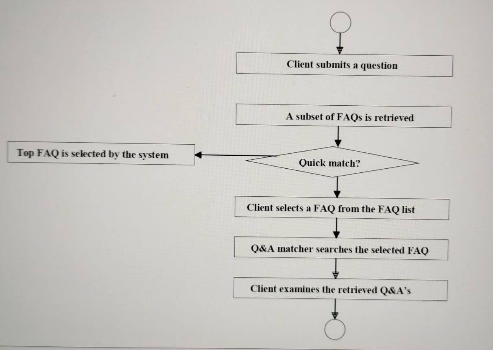
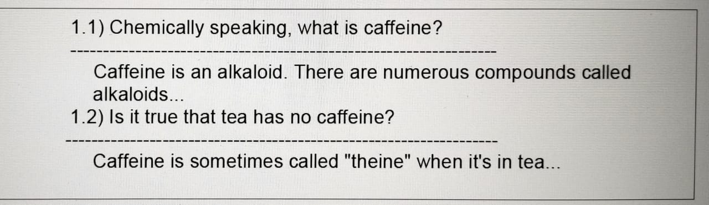
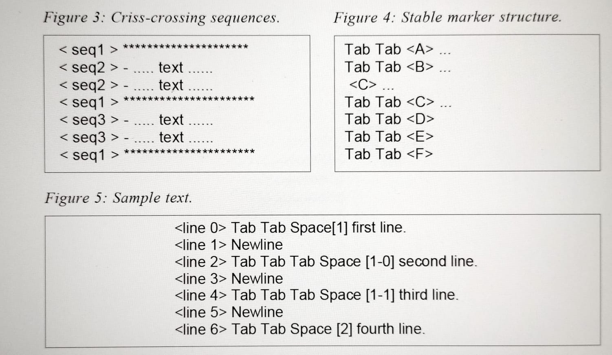
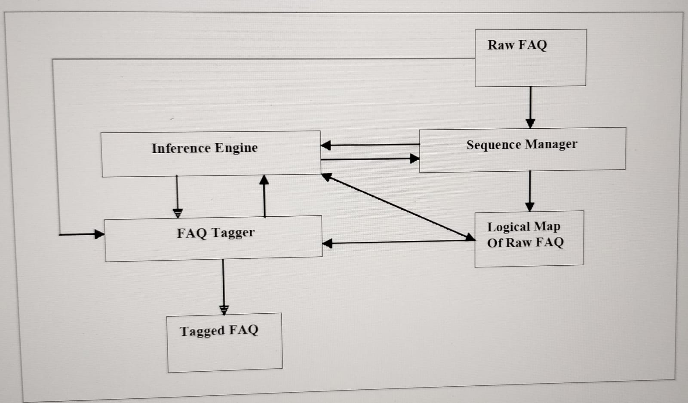
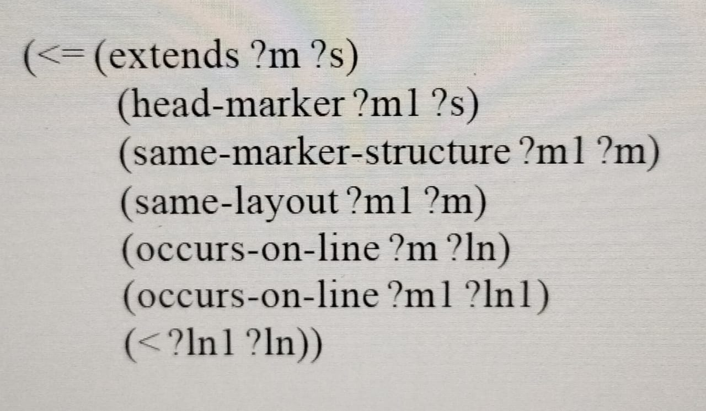
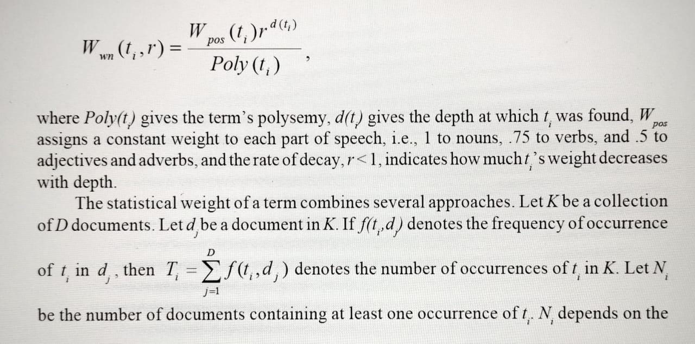

Knowledge of the structural organization of information in documents can be of significant assistance to information systems that use documents as their knowledge bases. In particular, such knowledge is of use to information retrieval systems that retrieve documents in response to user queries. This chapter presents an approach to mining free-text documents for structure that is qualitative in nature. It complements the statistical and machine-learning approaches, insomuch as the structural organization of information in documents is discovered through mining free text for content markers left behind by document writers. The ultimate objective is to find scalable data mining (DM) solutions for free-text documents in exchange for modest knowledge-engineering requirements. The problem of mining free text for structure is addressed in the context of finding structural components of files of frequently asked questions (FAQs) associated with many USENET newsgroups. The chapter describes a system that mines FAQs for structural components. The chapter concludes with an outline of possible future trends in the structural mining of free text.
When the manager of a mutual fund sits down to write an update of the fund’s
prospectus, he does not start his job from scratch. He knows what the fund’s sharehold
Copyright © 2003, Idea Group Inc. Copying or distributing in print or electronic forms without written
permission of Idea Group Inc. is prohibited.
ers expect to see in the document and arranges the information accordingly. An inventor, ready to register his idea with the Patent and Trademark Office of the U.S. Department of Commerce, writes it up in accordance with the rules specifying the format of patent submissions. A researcher who wants to submit a paper to a scientific conference must be aware of the format specifications set up by the conference committee. Each of these examples suggests that domains of human activity that produce numerous documents are likely to have standards specifying how information must be presented in them.
Such standards, or presentation patterns, are a matter of economic necessity; documents whose visual structure reflects their logical organization are much easier to mine for information than unconstrained text. The ability to find the needed content in the document by taking advantage of its structural organization allows the readers to deal with large quantities of data efficiently. For example, when one needs to find out if a person’s name is mentioned in a book, one does not have to read it from cover to cover; going to the index section is a more sensible solution. dfg'
Knowledge of the structural organization of information in documents1 can be of significant assistance to information systems that use documents as their knowledge bases. In particular, such knowledge is of use to information retrieval systems (Salton & McGill, 1983) that retrieve documents in response to user queries. For example, an information retrieval system can match a query against the structural components of a document, e.g., sections of an article, and make a retrieval decision based on some combination of matches. More generally, knowledge of the structural organization of information in documents makes it easier to mine those documents for information.
The advent of the World Wide Web and the Internet have resulted in the creation of millions of documents containing unstructured, structured, and semi-structured data. Consequently, research on the automated discovery of structural organization of information in documents has come to the forefront of both information retrieval and natural language processing (Freitag, 1998; Hammer, Garcia-Molina, Cho, Aranha, & Crespo, 1997; Hsu & Chang, 1999; Jacquemin & Bush, 2000; Kushmerick, Weld, & Doorenbos, 1997). Most researchers adhere to numerical approaches of machine learning and information retrieval. Information retrieval approaches view texts as sets of terms, each of which exhibits some form of frequency distribution. By tracking the frequency distributions of terms, one can attempt to partition the document into smaller chunks, thus claiming to have discovered a structural organization of information in a given document. Machine-learning approaches view texts as objects with features whose combinations can be automatically learned by inductive methods.
Powerful as they are, these approaches to mining documents for structure have two major drawbacks. First, statistical computations are based on the idea of statistical significance (Moore & McCabe, 1993). Achieving statistical significance requires large quantities of data. The same is true for machine-learning approaches that require large training sets to reliably learn needed regularities. Since many documents are small in size, the reliable discovery of their structural components using numerical methods alone is problematic. Second, numerical approaches ignore the fact that document writers leave explicit markers of content structure in document texts. The presence of these markers in document texts helps the reader digest the information contained in the document. If these markers are ignored, document texts become much harder to navigate and understand.
This chapter presents an approach to mining free-text documents for structure that is qualitative in nature. It complements the statistical and machine-learning approaches insomuch as the structural organization of information in documents is discovered through mining free text for content markers left behind by document writers2. The ultimate objective is to find scalable data-mining solutions for free-text documents in exchange for modest knowledge-engineering requirements. The approach is based on the following assumptions:
• Economic Necessity. The higher the demand for a class of documents, the greater the chances that the presentation of information in those documents adheres to a small set of rigid standards. Mutual fund prospectuses, 10-Q forms, and USENET files of frequently asked questions (FAQs) are but a few examples of document classes that emerged due to economic necessity and whose formats were standardized by consumer demand.
• Texts As Syntactic Objects. As a source of information, text can be viewed as a syntactic object whose structural organization obeys certain constraints. It is often possible to find the needed content in a document by using the structural organization of its text.
• Presentation Consistency. Document writers are consistent in their presentation patterns. They do not change the chosen pattern within a single document. Many of them stick with the same pattern from document to document.
• Presentation Similarity. The logical components of a document that have the same semantic functionality are likely to be marked in the same or similar fashion within a presentation pattern. For example, many document writers tend to mark headers, tables, sections, bibliographies, etc., in the same or similar ways in document texts.
These assumptions form a theoretical basis of the approach. Collectively, they act as guidelines for researchers and developers who are interested in building free-text datamining tools for individual domains. The rest of the chapter illustrates how these assumptions were applied to mine newsgroups’ expertise.
The rest of the chapter is organized as follows. The next section provides the necessary background and a review of relevant literature. The following three sections constitute the main thrust of the chapter. First, we describe the problem of mining newsgroups’ expertise for answers to frequently asked questions. Second, we state our solution to the problem of mining free text for structure. The problem is addressed in the context of finding structural components of FAQs associated with many USENET newsgroups. Third, we describe an evaluation of our mining approach. In the last two sections, we outline possible future trends in mining text for structure and present our conclusions.
In the context of data mining, structural mining of text is the task of partitioning text into components, each of which contains a specific kind of information. For example, if it is known that a given HTML text is a home page, one can design strategies to mine the
Copyright © 2003, Idea Group Inc. Copying or distributing in print or electronic forms without written permission of Idea Group Inc. is prohibited.
text for the owner’s name, address, e-mail, etc. The ever-increasing numbers of electronically available documents have intensified research on mining text for structure. Texts are typically divided into three broad categories: free, structured, and semi-structured.
If we view texts as islands of content, then free texts can be viewed as content islands without any road maps. To discover a road map in a free text requires a certain amount of data mining through parsing, statistical analysis, or machine learning. Many USENET FAQs and journal articles are good examples of free texts.
Structured texts are information islands whose content is organized according to a specific road map. Relational databases are a good example of structured texts where all of the relations between textual entities, i.e., records, are known and can be readily obtained through well-defined queries. In effect, in a structured text most of the structural data mining has been done.
Semi-structured texts cluster around the borderline between free and structured. Generally speaking, a semi-structured text offers more structure than a free text but less than a structured one. HTML pages are a good example of semi-structured texts. While they offer a standard set of tags that point to the structural organization of information in them, they do not specify the types of information that the tags can label. For example, an HTML list can contain names of people, phone numbers, top stories of the day, etc.
Current research efforts in structural text mining combine techniques of machine learning, natural language processing, and information retrieval. Many machine-learning approaches to text mining are based on the ideas of inductive learning (Mitchell, 1997). The problem of mining text for structure is cast in terms of taking a set of text instances representative of the general population of texts to be mined and extracting sets of rules from those instances. Approaches that use natural language processing (Allen, 1987) typically view texts as objects having a structure that can be discovered through parsing. The problem is stated in terms of a set of constraints that a given domain of texts exhibits and a means to use those constraints in finding text structure. Finally, informationretrieval approaches are based on the idea that texts are intellectual artifacts that consist of words related to each other semantically in a number of complex ways. The intellectual process of producing texts incidentally leaves behind simple statistical regularities (Hearst, 1997). Capturing those regularities through statistical analysis allows one to arrive at the structural organization of information in the texts.
Many authors are concerned with the problem of extracting database-like structures from Web pages, in effect reverse-engineering the process of database-backed Web page generation. Hammer et al. (1997) present a configurable tool for extracting semistructured data from a set of HTML pages, given a declarative specification of where the data of interest is located. Creating such a specification can be a tedious process, however, and may require an extensive knowledge-engineering effort. The machinelearning approach to this problem has been labeled “wrapper induction” (Kushmerick et al., 1997). The extraction procedure, or wrapper, for a specific resource is learned from a set of representative pages from that resource. Several classes of wrappers have been identified that are both useful and efficiently learnable.
Hsu and Chang (1999) apply several aspects of automata theory to the problem of constructing information extractors for mining semi-structured documents. By semistructured documents the authors mean HTML pages. The main argument of the proposed research framework rests on the idea that programming information extractors manually is not feasible due to the amount and degree of variation in information placed
Freitag (1998) also casts information extraction as a machine-learning problem. It is argued that one solution to that problem is relational learning. Relational learning represents hypotheses as sets of if-then rules. Because sets of if-then statements can be viewed as programs in a logic programming language, such as PROLOG, relational learning is often called Inductive Logic Programming (Mitchell, 1997). Freitag describes a general-purpose top-down relational learning algorithm for information extraction called “SRV.” SRV takes as input a set of token-oriented features that encode most of the domain-specific information. For example, they may encode a standard set of questions that can be asked of someone’s home page, such as the owner’s name, affiliation, e-mail,
Figure 1: How FAQ Finder works.
etc. An answer to each question is assumed to be a text fragment from that home page. Thus, the algorithm solves the problem of finding the best unbroken fragment of text that answers a question from a given set of questions. One of the definite advantages of the SRV algorithm is that it makes no assumption about document structure. Instead, structural information is supplied as input to the system. As a consequence, an argument is made that SRV may be better suited for new domains than other systems. The author reports a successful evaluation of an SRV-based tool in the domain of university course and research project pages. A way is suggested to make the tool Web-aware by extending it with HTML-specific features.
Jacquemin and Bush (2000) present a tool for the acquisition of named entities, e.g., names of companies, from textual sources. The authors’ approach combines lexical indices with formatting instructions. Lexical indices are discourse markers, and formatting instructions are HTML tags. The system includes three shallow parsers for mining HTML texts for specific structures such as lists, enumerations, and anchors. The named entities are extracted from the found structures by analyzing discourse markers and HTML tags. While Jacquemin and Bush do not use any machine-learning techniques, their approach is similar in spirit to the approach advocated in Kushmerick et al. (1997) in that it advocates combining structural information about documents with linguistic patterns. The system described by Jacquemin and Bush focuses exclusively on HTML documents and does not tag anything. Its sole purpose is to build lists of named entities found in specified HTML pages.
Hearst (1997) and Hearst and Plaunt (1993) advocate a classic information-retrieval approach to mining documents for structure. The approach is called TextTiling. TextTiling is a method for partitioning full-length text documents into coherent multiparagraph units. The units form a sequence of subtopical passages. The TextTiling algorithm assumes that a document moves from topic to topic. Each topic has its own vocabulary associated with it. When one topic changes to a different topic, the vocabulary changes, too. Consequently, sharp changes in the vocabulary signify boundaries between the elements of a document structure. The algorithm completely ignores all lexical markers provided by the document authors.
Over the past several years, the Internet has seen a proliferation of newsgroups. A newsgroup is started by individuals interested in a topic, e.g., caffeine or cars. These individuals, who are experts on the topic, want to make their expertise publicly available, which they accomplish through the newsgroup’s FAQ.
Newsgroup-based expertise distribution works for people with a stable interest in the newsgroup’s topic. However, many people have more transient interests. Typically, such transient interests are caused by questions whose answers are beyond an information seeker’s area of expertise. There are three types of problems that information seekers with transient interests confront: insufficient knowledge, insufficient time, and privacy.
Let us illustrate these problems with an example. Consider a college student, who wants to write a report on the therapeutic effects of caffeine. The student may not know about the coffee newsgroup. This lack of knowledge may cause the student to spend much time searching for the newsgroup. Even if the student already knows about the newsgroup, his interest in finding an answer to his question does not necessarily mean that he is interested in subscribing to the newsgroup and subsequently reading a dozen messages a day, most of which have nothing to do with his question.
Even if the student knows about the newsgroup’s FAQ, the student may not have the time to browse for an answer. This is because many newsgroups have FAQs containing hundreds and sometimes thousands of question-answer pairs (Q&A’s) and provide no search or browsing tools to mine those Q&A’s.
Finally, the student may be concerned about privacy. If he posts a question to the newsgroup, his name will be read by hundreds, possibly thousands, of subscribers. Some newsgroups are known for their inflammatory nature and are not friendly to novices or casual posters.
These problems signify a need for a system that provides Web and Internet users with a gateway to the newsgroups’ expertise. Users who do not know a relevant newsgroup should not spend much time searching for it. Users with transient interests in the newsgroup’s topic should not have to make unwanted commitments to obtain answers.
FAQ Finder was developed to meet this need for a gateway to the newsgroups’ expertise (Burke et al., 1997). The question-answering task is conceptualized as the retrieval of answers to similar questions answered previously. To answer a new question is to choose a suitable Q&A collection, i.e., a set of FAQs, and to retrieve from it the answer to a similar question. There is a substantial literature on FAQ Finder (Burke, Hammond, & Cooper, 1996; Burke, Hammond, & Young, 1996; Kulyukin, 1998a, 1998b). Here we only offer an outline of the system, because it grounds our free-text mining task in a proper context.
FAQ Finder answers natural language questions from a collection of 602 Usenet FAQs. Given a question, FAQ Finder:
• finds a small set of FAQs relevant to the question;
• displays short descriptions of those FAQs to the user; and,
• retrieves a small number of Q&A’s relevant to the question from the chosen FAQ.
Figure 1 shows FAQ Finder’s flowchart. The submitted question is mapped to a set of FAQs that are potentially relevant to the question (FAQ retrieval). A FAQ from the list is chosen either by the client or by the system. For example, if the client chooses the quick match option, the top FAQ is selected automatically by the system. The FAQ is searched for answers to the question. A list of relevant Q&A’s, if such are found, is returned to the user (Q&A retrieval).
The FAQ retrieval is accomplished by the vector space retrieval model (Salton & McGill, 1983). Each FAQ is turned into a vector of term weights in a multidimensional vector space whose dimensions are the terms found in all of the FAQs in the collection.
Copyright © 2003, Idea Group Inc. Copying or distributing in print or electronic forms without written permission of Idea Group Inc. is prohibited.
Terms are computed from the free texts of FAQs. Common words, such as “and,” “to,” or “from,” are removed. The remaining words become terms through stemming, a vocabulary normalization procedure that reduces word forms to their stems (Frakes & Baeza-Yates, 1992). For example, “information,” “informed,” “informant,” and “informing” are all reduced to “inform.”
As a simple example, consider a collection of three FAQs, F1, F2, and F3, where each FAQ contains three terms: T1, T2, and T3. We have a three-dimensional vector space, in which each vector corresponds to a FAQ and consists of three term weights. A term’s weight is a ratio of the term’s frequency in the FAQ and the number of FAQs in which it occurs at least once. Each weight is a coordinate along the dimension of the corresponding term. A user’s question is turned into a vector in the FAQ vector space. The similarity between the question vector and a FAQ vector is computed as the cosine of the angle between them. Thus, the smaller the angle, the more relevant the FAQ is to the question.
The Q&A retrieval begins when a FAQ is selected to be searched for answers. The Q&A Retriever computes the similarity score between the question and each Q&A in the FAQ. The score combines a statistical metric and a semantic metric.
To compute the statistical similarity, the question is turned into a term weight vector in the space of the selected FAQ. The cosine similarity score is computed between the question vector and each Q&A vector in the FAQ.
The semantic similarity is based on recognizing semantic relations among the words of the user’s question and the words of a Q&A’s question. Such relations are found through WordNet®, a semantic network of English words and phrases developed at Princeton University (Miller, 1995). For example, if the user’s question contains “computer” and the Q&A’s question contains “machine,” the two questions are similar insomuch as “computer” is connected to “machine” via the isa link in WordNet’s noun network (Kulyukin, 1998b). More details on the semantic and statistical similarities are provided in the Appendix.
The operation of FAQ Finder is based on the assumption that a FAQ is a sequence of Q&A’s. In reality, however, the system must first find the Q&A’s in the free text of the FAQ. Neither retrieval of answers nor their indexing is possible unless the system knows which text regions are answers and which are questions.
One may think that identifying Q&A’s is not a serious problem. A typical argument runs as follows. Since questions end in a question mark, it should be possible to use a regular expression matcher that retrieves all of the sentences that end with question marks.
There are two flaws with this argument. First, it assumes that one knows how to segment free text into sentences. But, while the identification of sentence boundaries may be feasible in small domains with highly constrained texts, it remains a formidable challenge for free-text processors that go against large heterogeneous corpora (Charniak, 1997; Daniels & Rissland, 1995; Palmer & Hearst, 1994). Second, many questions in FAQs do not end in question marks, while many answers contain questions that do. Thus, even
if it were possible to segment free text into sentences, simplistic regular expression approaches are too noisy to be useful (Kulyukin, Hammond, & Burke, 1996).
Finding Q&A’s would be a serious obstacle, were it not for the fact that FAQs are structured free texts. Consider, for example, the following excerpt from the caffeine FAQ given in Figure 2.
The experts who wrote this FAQ used several lexical cues to mark each Q&A. Each question is marked with two Arabic numerals separated by a dot and followed by a right parenthesis, e.g., “1.2).” Each answer is separated from its question with another lexical cue, i.e., a line of hyphens. We refer to such cues as lexical markers or simply as markers. We have compiled the following list of the most frequent marker types found in FAQs:
• Alpha Markers. For example, “Q:”, “A:”, “Subject:”, “Section:”
• Alphanumeric Markers. For example, “[1-0]”, “1)”, “10.2a”, “VIII.”
• Symbolic Markers. For example, “***********”, “==============”.
Figure 2: A sample from a FAQ about caffeine.
Lexical markers are used to introduce structural regularity into FAQs. Structural regularities benefit the experts, i.e., FAQ writers, because they enable easy and fast maintenance of online expertise. They benefit the FAQ readers, because they help them find the needed content quickly.
Lexical markers arrange themselves into marker sequences. For example, “1.1), 1.2)’” is a sequence of two alphanumeric markers, i.e., markers that contain both numbers and characters. The last marker of a sequence is referred to as its head marker. An empty sequence has an empty head marker. When a new marker is added to a sequence, the sequence’s head marker is said to be extended by the added marker. For example, the head marker of “1.1), 1.2),” which is “1.2),” can be extended on “1.3).”
The presence of these sequences suggests a way to build a FAQ parsing system to mine the free texts of FAQs for structural components, i.e., question-answer pairs,
tables of contents, and bibliographies. The parser spots marker sequences that point to structural components and tracks the sequences in the FAQ’s text, labeling the elements of the component along the way. The advantage of this approach is that mining for Q&A’s requires no deep natural language processing (NLP), which is known to be a very hard task (Allen, 1987). All the parser needs to know is how the marker sequences behave in the FAQs.
An analysis of FAQs reveals that marker sequences obey a small number of constraints. The presence of such constraints is implied by the four assumptions stated in the introduction section. Since FAQ writers are interested in spreading their knowledge, they make sure that the knowledge is packaged in an easily digestible format. The constraints that we have found are as follows:
• Lack of recursion. Alphanumeric marker sequences do not recurse.
• Fixed marker structure. The structure of markers in a sequence remains the same.
• Lack of criss-crossing. A sequence does not cross another sequence if the latter has started before the former. This constraint applies only to symbolic sequences.
• Proximity. When two different sequences with the same marker structure can be extended on the same marker, only the sequence whose head marker is closer to the predicted marker is allowed to extend on it.
As an example of the non-recursiveness of marker sequences, consider the following pattern that occurs in numerous FAQs: “[1] ...[2] ... [N] ... [1] ...” The ellipses stand for pieces of free text. Since marker sequences do not recurse, the FAQ parser knows that a new sequence is started when it sees the second “[1].” This constraint enables the parser to determine when the FAQ’s table of contents ends and the actual Q&A sequence begins.
As an example of the fixed marker structure constraint, consider “I) ... II) ... III) ... [4] ... IV) ...” When the parser detects “I),” it knows that the other markers of the sequence will have the same structure, i.e., a Roman numeral followed by a right parenthesis. Hence, it ignores “[4]” as belonging to another sequence or occurring as part of free text. The stability of marker structure allows the parser to track marker sequences in FAQs.
Another example of the fixed marker structure constraint is given in Figure 4, where the tab character is made visible. The parser ignores the first marker, because it is not preceded by two tab characters, as are the other markers of the sequence. In other words, the two tabs that constitute the layout of the sequence allow us to ignore the first “As an example of the criss-crossing constraint, consider the sequences in Figure 3. Here the crossing constraint forces the third “-” marker from above to start a new sequence, i.e., seq3. If it belonged to seq2, seq2 would have to cross seq1, which the constraint does not allow.
The proximity constraint simply says that the sequence always extends on the marker closest to its head marker.
FAQ writers frequently use markers in conjunction with layout. One way to compute the layout of a document is to digitize its text line by line according to a simple encoding scheme. The encoding scheme implemented in FAQ Minder treats each line of a document as a string. Each substring of the string is mapped into the integer denoting its length. The special layout characters like newline, tab, and space are mapped into the integers 1000, 2000, and 3000, respectively. This scheme works well, because all FAQs in our library have lines that are at most 100 characters long. Since the scheme uses only integers, it can be easily adjusted to other document formats with more characters per line.
The database of assertions about sequences detected in the text of a document is referred to as the logical map of the document. The presentation pattern of a document is determined by its logical map and its layout. As an example, consider the following chunk of text with the layout characters made visible given in Figure 5. The layout of the above text computed according to the above scheme is given in Figure 6. Part of the logical map of that text is offered in Figure 7. The symbols lsb, rsb and hphn stand for
left square bracket, right square bracket, and hyphen, respectively. The predicates used have the following semantics. The predicate (alphanum-sequence s) states that s is an alphanumeric sequence. The predicate (marker m s) states that m is a marker in a sequence s. The predicate (occurs-on-line m n) states that a marker m occurs on line number n. Finally, the predicate (component m c n) states that c is the n-th component of a marker m.
These databases are treated as sets of First-Order Predicate Calculus (FOPC) assertions. This format makes it straightforward to apply standard pattern matching and inference techniques well known in the Artificial Intelligence community (Norvig, 1992).
FAQ Minder works in two modes: supervised and unsupervised. In the unsupervised mode, the system takes as input the text of a FAQ and mines it for structure on its own. The system deals with tables of contents, questions and answers, and bibliographies. Network headers and glossaries found at the beginning of many FAQs are not currently dealt with, because the current version of FAQ Finder does not utilize them during answer retrieval. In the supervised mode, FAQ Minder identifies the logical structure of a FAQ by interacting with the user through a set of simple interfaces.
Figure 8 shows FAQ Minder’s architecture. The system consists of three modules: the sequence manager, the inference engine, and the tagger. The sequence manager reads the text of a document, builds its layout, and activates and deactivates marker sequences. The inference engine manages the logical map and the constraint satisfaction. The operation of the inference engine is based on a set of forward-chaining and backward-chaining rules (Norvig, 1992) about the logical structure of documents and
Figure 8: FAQ Minder’s architecture.
marker constraints. Old rules are adjusted and new rules are added as needed. Thus, documents from new domains can be processed by the system as long as the constraints are encoded as rules.
The tagger inserts tags into the text of the document given the document’s layout and logical map. The current tag set consists of six tags: “:QUE,” “:ANS,” “:TOC,” “:TOCITEM,” “:BIB,” “:BIB-ITEM.” The “:QUE” tag is put at the beginning and the end of a question. The “:ANS” tag is put at the beginning and end of an answer. The “:TOC” tag is put at the beginning and end of a table of contents. The “:TOC-ITEM” is put at the beginning and end of an item in the table of contents. The “:BIB” and “:BIB-ITEM” tags are used in the same fashion for bibliographies. To prevent any possibility of symbol clashes, the tags are extended with randomly generated sequences of characters and numbers, e.g., “:QUE-a12b34.” Once such a sequence is generated, it is appended at the end of each tag used in a given FAQ.
FAQs are read line by line. After a line is read, the sequence manager computes its layout, adds it to the document layout, and gives the currently active marker sequence a chance to examine the contents of the line. The manager distinguishes two types of marker sequences: active and inactive. An active sequence is started when a marker is recognized in the text. A sequence remains active as long as any markers found in the read line can extend it. When no found marker can extend the active sequence, it becomes inactive. Thus, there can be at most one active sequence, but potentially many inactive sequences.
The inference engine is used heavily by the sequence manager in deciding whether the currently active sequence can be extended on a marker found in the current line. To allow a marker to extend the active sequence, the marker and the sequence must satisfy at least one rule governing extension. For example, one of the backward-chaining sequence extension rules states that a marker extends a sequence if all of the following conditions are satisfied: the marker structure of the sequence’s head marker is the same as the marker structure of the found marker; the layout of the sequence’s head marker is the same as the layout of the found marker; and the found marker occurs on a line whose number is greater than the line number of the sequence’s head marker. In other words, this backward-chaining rule is written as follows:
The <= sign that starts the rule states that this is a backward-chaining rule. All
backward-chaining rules have one consequent and at least one antecedent. Each
backward-chaining rule has the following syntax: (<=
Figure 9: Layout change.
consequent, and has the following syntax: (=>
At the beginning of the mining process, there are no active or inactive sequences. If a sequence recognizes a marker, it checks if the marker matches the layout of the previously recognized markers. The marker is ignored unless there is a layout match. When the sequence is finished with the line, it sends the sequence manager a message about its findings. If the sequence has recognized a marker and does not violate any constraints(which the inference engine checks against the logical map built thus far), the sequence is permitted to make the marker its current head marker and make the appropriate modifications in the logical map. If a constraint violation is inferred, the sequence manager puts the sequence on the list of inactive sequences.
After the active sequences have examined the line and failed, the sequence manager lets the inactive sequences, if there are any, do the same. This second chance heuristic has its empirical justification in the fact that some marker sequences start early in the document, become inactive because of other sequences, and resurface in the middle or at the end of the document.
After the layout and the logical map of the document have been computed, the tagger uses them to tag the text of the document. The tagger is allowed to interact with the inference engine, because it may need to do some additional inferences. The end result is the text of the FAQ whose logical components are tagged.
FAQ Minder functions as the front-end of FAQ Finder’s indexing mechanism. Each FAQ is first mined for its structural components. Once the structural components of the FAQ are found and tagged, the FAQ is given to FAQ Finder for further indexing. The current implementation of FAQ Finder combines scalable, knowledge-intensive NLP techniques with numerical approaches of information retrieval. Thus, each questionanswer pair in a tagged FAQ is indexed in terms of its question and its answer. The indexing of questions is done so that at run time FAQ Finder can compute the semantic similarity between the terms in a submitted question and the terms in every question in the FAQ. The statistical similarity is supported through indexing each found Q&A pair as a document in a vector space of Q&A’s in a given FAQ.
We have tested FAQ Minder on 100 FAQs. FAQ Minder’s task was to identify tables of contents, question-answer pairs, and bibliographies. All in all, FAQ Minder had to identify 2,399 items. When FAQ Minder and a human judge were in agreement on an item, the item was said to be completely recognized. When FAQ Minder identified part of an item, the item was said to be partially recognized. When FAQ Minder wrongly tagged a chunk of text, that chunk of text was referred to as a false positive. The items identified by a human judge but missed by FAQ Minder were referred to as unrecognized.
Of 2,399 items, 1,943 items were completely recognized, 70 items were partially recognized, 81 were considered as false positives, and 305 items were unrecognized. In percentage terms, FAQ Minder completely recognized 81% of items, partially recognized 3% , wrongly tagged 3.4%, and failed to identify 12.6%.
We identified several causes of failure while analyzing the results of the experiments. The most prominent among them was what we call “sudden layout changes due to typos.” In other words, the layout between two consecutive markers in a sequence was different due to a typo. As an example, consider the sequence in Figure 9 with the layout characters made visible. The markers “[10],” “[11],” and “[12]” clearly belong to the same sequence. Yet, because the layout of the “[11]” marker is different from the layout of the “[10]” marker, the sequence is prematurely terminated at “[10].”
We attributed the second cause of failure to typos in markers themselves. Consider the following example:
5) Perl books.
7) Perl software.
The current rules of marker extension do not allow the system to extend the “5)” marker on the “7)” marker.
Finally, we found markers for which the system had no rules of extension. For instance, we discovered that some FAQ writers use Roman numerals in conjunction with letters and Arabic numerals, e.g. “III.1.a).” FAQ Minder could not handle such cases.
These failures suggest several directions for future research. The first direction is to introduce some error recovery into the system. Since the typos are a norm rather than an exception, the system should have a coherent way to deal with them. The marker typo failures can be handled through a simulation mechanism. Sometimes a marker is found whose structure is consistent with the structure of the previous markers in the active sequence, but the sequence’s head cannot be extended to the found marker. In such cases, the sequence manager can compute all of the possible extensions of the head marker and see if any of those extensions can be extended to the found marker. For example, if the head marker of the active sequence is “[5]” and the found marker is “[7],” the sequence manager can simulate the extension of “[5]” to “[6]” and then verify that “[6]” can be extended to “[7].”
The layout typo failures exemplified in Figure 9 can be handled by the same simulation mechanism, with one exception. After the sequence manager verifies that one of the possible extensions can be extended to the found marker, it then tries to find it in the text of the FAQ between the line with the current head marker and the line with the found marker. If the marker is found, possibly with a different layout, the sequence
manager integrates it into the sequence. This strategy would allow the sequence manager to integrate the marker “[11]” into the sequence although the layout of “[11]” is different.
The second direction is to give FAQ Minder a limited ability to process natural language phrases. Many FAQ writers state explicitly that a table of contents, a glossary, or a bibliography is about to begin by using the following phrases: “Table of Contents,” “List of Topics,” “The following questions are answered below,” etc. If FAQ Minder can recognize such phrases, it can assume that the sequence that follows marks the table of contents, the glossary, the topic list, etc. Toward this end, we have specified a number of the most common ways in which people can say that the table of contents is about to start. We have run our small program on 150 FAQs. The program correctly recognized such sentences in 111 FAQs.
The third research direction involves the supervised mode of FAQ Minder. In the supervised mode, FAQ Minder displays its progress through the text of a FAQ in a simple graphical user interface. As the system goes through the text of the FAQ, it highlights different FAQ components as soon as it detects them. For example, when the beginning of a table of contents is detected, the system informs the user that it has started tracking the table of contents. The user then has the opportunity to verify that the system has made a correct decision or tell the system that its decision is wrong.
The supervised mode requires little inference on the part of the system. However, it requires a large time commitment on the part of the user. Our conjecture here is that ultimately a system that recognizes its own limitations and overcomes them by asking the user intelligent questions saves the user more time than a completely independent system whose work requires laborious verification.
We believe that text-based data mining will continue to evolve primarily in three directions: machine learning, natural language processing, and statistical analysis. A promising research direction seems to be a combination of natural language processing and machine learning. This is due to the fact that in many domains documents have a clearly recognizable structure that can be either learned from examples or encoded in a system of rules for parsing. Once that structure is found, its components can be mined for content with restricted natural language processing techniques.
Our work on FAQ Minder is a step in this research direction. Viewed abstractly, FAQ Minder is a rule-based document parser. The system presents a domain-dependent approach to free-text data mining. The rules that the system uses are domain-dependent and manually encoded. However, this need not be the case. These rules may well be learned automatically through a machine-learning approach. The trick here is how much manual knowledge engineering the machine-learning approach requires. Although many machine-learning approaches exhibit impressive learning rates and results, they require a domain theory that is either explicitly given to the learning algorithm or implicitly encoded in the way learning is done. Sometimes it is more practical to encode the rules manually than to first represent a domain theory and then wait for the learner to give you the rules automatically.
Statistical analysis is gaining prominence in text-based data mining due to the increasing availability of large text corpora. The corpora, due to their sheer volume, allow statistical techniques to achieve statistically significant results. In recent years, there has been a resurgence in research on statistical methods in natural language processing (Brill & Mooney, 1997). These methods employ techniques that aim to automatically extract linguistic knowledge from natural language corpora rather than require the system developer to do the knowledge engineering manually. While the initial results of the corpora-based text mining have been promising, most of the effort has been focused on very low-level tasks such as part-of-speech tagging, text segmentation, and syntactic parsing (Charniak, 1997), which suggests that some amount of domain-dependent knowledge engineering may well be mandatory. One exception to these low-level tasks is the research reported by Ng and Zelle (1997), who apply some corpus-based techniques to the problems of word-sense disambiguation and semantic parsing. But, while the reported results are encouraging, they are tentative.
Another prominent trend in textual data mining that relies heavily on statistical techniques is automatic thesaurus construction (Srinivasan, 1992). Thesauri are widely used in both indexing and retrieving textual documents. Indexers use thesauri to select the most appropriate terms to describe content; retrievers use thesauri to formulate better queries. For example, if a submitted query does not return acceptable results, the terms of the query can be extended with related terms from a thesaurus. Since manual thesaurus construction is extremely labor intensive, it is almost guaranteed that future research efforts will focus on completely or partially automating thesaurus construction. In automatic thesaurus construction, the domain is defined in terms of the available documents. The basic idea is to apply certain statistical procedures to identify important terms and, if possible, relationships among them. A promising direction of research in this area of text data mining is the identification of non-trivial semantic relationships. While statistical methods are good at detecting broad semantic relationships such as genus-species or association (Bookstein & Swanson, 1974), they alone are not sufficient for more subtle relationships such as part-whole, taxonomy, synonymy, and antonymy.
Question answering from large online collections is an area that uses many textual data-mining techniques. Given a collection of documents and a collection of questions, a question-answering system can be viewed as mining the document texts for answers to the questions. In contrast to standard information retrieval systems, e.g., search engines, question-answering systems are not allowed to return a full document or a set of documents in response to a question. The assumption here is that the user has no interest or time to sift through large texts looking for answers.
Question answering has recently achieved enough status and attracted enough research interest to be awarded a separate track at the annual Text Retrieval Conference (TREC) (Voorhees & Harman, 2000; Voorhees & Tice, 2000). A typical questionanswering system requires short answers for short factual questions such as “Who is George Washington?” Most modern question-answering systems operate in two steps. Given a question, they first choose a small subset of the available documents that are likely to contain an answer to the submitted question and then mine each of those documents for a specific answer or a set of answers. Statistical means have been rather successful in narrowing questions to small collections of documents (Clarke, Cormack, & Lynam, 2001). However, they are not as successful at extracting the actual answers from
the selected documents. As a system, FAQ Minder was built to address that very problem. More research into document structure and its interaction with document content is and will remain of great importance for question answering.
Information extraction is another emerging trend in textual data mining (Cardie, 1997). An information extraction system takes a free text as input and mines it for answers to a specified topic or domain of interest. The objective is to extract enough information about the topic of interest and encode that information in a format suitable for a database. Unlike in-depth NLP systems, information extractors do a cursory scan of the input text to identify potential areas of interest and then use more expensive text-processing techniques to mine those areas of interest for information. An example of an information extraction system is a system that constructs database records from news wires on mergers and acquisitions. Each news wire is turned into a set of slot-value pairs that specify who merged with whom, when, etc. One of the greatest challenges and research opportunities of information extraction is portability. Information extraction systems are very domain dependent. Currently, there are information extraction systems that analyze life insurance applications (Glasgow, Mandell, Binney, Ghemri, & Fisher, 1997) or summarize news wires on terrorist activities (MUC-3, 1991; MUC-4, 1992). These systems, however, use a lot of built-in knowledge from the domains in which they operate and are not easily portable to other domains. The main reason for using built-in knowledge lies in the nature of the task. The more domain-specific knowledge an information extractor has, the better it performs. The principal disadvantage is that the manual encoding of this knowledge is labor intensive and subject to errors. Thus, automating domain-specific knowledge acquisition is likely to be a promising direction of future research.
We examined the task of mining free-text electronic documents for structure. The task was examined in the context of the FAQ Minder system that does the structural mining of FAQs found in USENET newsgroups. The system finds the logical components of FAQs: tables of contents, questions, answers, and bibliographies. The found logical components of FAQs are used by FAQ Finder, a question-answering system.
The approach to mining free text for structure advocated in FAQ Minder is qualitative in nature. It is based on the assumption that documents in many domains adhere to a set of rigid structural standards. If those standards are known to a text-mining system, they can be successfully put to use for a variety of tasks, such as question answering or information extraction. This approach complements the numerical approaches insomuch as the structural organization of information in documents is discovered through mining free text for content markers left behind by document writers. The behavior of those markers is known to the system a priori.
We presented a number of alternative approaches to mining text for structure, of which the most prominent are the approaches based on machine-learning methods. What all of these approaches have in common is the assumption that there is some fixed structure, such as a set of database fields, whose contents are to be filled in with chunks of text derived from the text being processed. FAQs can be viewed as an example of this
assumption, where there are slots for questions, answers, tables of contents, and bibliographies, and a minimal amount of surrounding context. However, FAQs are much closer to free text than HTML pages, which constitute the focus of most text-mining machine-learning systems.
The researchers who advocate machine-learning approaches to text mining often state that the manual encoding of rules is tedious and labor intensive. Consequently, machine-learning approaches are more promising, because they can learn the rules automatically. This argument has definite merits, but does not explain the full picture. In practice, all successful machine-learning approaches require a domain theory (Freitag, 1998), that must be encoded manually. Many machine- learning approaches also require that input data be represented in a specific way, effectively taking knowledge representation for granted. Thus, the promise of automation is never completely fulfilled.
Many text-oriented machine-learning techniques (Charniak, 1997; Ng & Zelle, 1997) are very powerful and promising. However, their main weakness is that they are created with no specific task in mind and do not easily yield to customization for specific domaindependent problems. When this customization is feasible, it is effectively equivalent to manual knowledge engineering required in approaches similar to FAQ Minder’s.
Numerical approaches in information retrieval offer yet another alternative to qualitative free-text mining. We presented one such approach called TextTiling (Hearst, 1997; Hearst & Plaunt, 1993). TextTiling was designed for large documents and large sections, containing enough word data for variances between topics to be statistically noticeable. This technique would probably not be effective in segmenting FAQ files or similar documents, since questions are one or two sentences and answers typically no more than 200 words.
Each approach presented in this chapter has its strengths and weaknesses. None of them solves the problem of free-text data-mining completely. Qualitative approaches, such as FAQ Minder’s, produce good results but require manual knowledge engineering. Machine-learning methods can acquire complete data-mining models automatically but require domain theories and strict data formats. Information retrieval approaches do not require any knowledge engineering but cannot function without large text corpora. Hence, we believe that hybrid text-mining models are one of the most promising research directions in free-text data mining. A hybrid model is a model that requires a modest amount of knowledge engineering in exchange for scalable performance and acceptable results. The idea behind hybrid models is intuitively appealing: combine the relative strengths of the available alternatives, while minimizing their relative weaknesses.
1 We use the terms logical structure of documents and structural organization of information in documents interchangeably.
2 Since the approach presented in this chapter complements the existing approaches, it cannot be easily compared to them, because it is based on different assumptions. A comparison, by definition, is possible only among competing approaches.
We would like to thank Kristian Hammond for his countless contributions to the FAQ Finder project. Kris was the founder of the FAQ Finder project, and deserves credit for putting together the original FAQ Finder team at the University of Chicago’s Intelligent Information Laboratory. We would like to express our gratitude to Jay Budzik who contributed to the development of the FAQ Minder system. Steve Lytinen and Noriko Tomuro offered us many helpful comments.
Allen, J. (1987). Natural language understanding. Menlo Park, CA: Benjamin/Cummings Publishing Company.
Bookstein, A. & Swanson, D. R. (1974). Probabilistic models for automatic indexing.
Journal of the American Society for Information Science, 25(5), 312-318.
Brill, E. & Mooney, R. J. (1997). An overview of empirical natural language processing.
AI Magazine, 18(4), 13-24.
Burke, R., Hammond, K., & Cooper, E. (1996). Knowledge-based information retrieval
from semi-structured text. Proceedings of the AAAI Workshop on Internet-Based
Information Systems. Madison, WI: AAAI Press, pp. 18-24.
Burke, R. D., Hammond, K. J., Kulyukin, V., Lytinen, S. L., Tomuro, N., & Schoenberg, S.
(1997). Question answering from frequently asked question files: Experiences with
the FAQ Finder System. AI Magazine, 18(2), 57-66.
Burke, R. D., Hammond, K. J., & Young, B. C. (1996). Knowledge-based navigation of
complex information spaces.Proceedings of the American Association for Artificial
Intelligence Conference. Madison, WI:AAAI Press, pp. 132-139.
Cardie, C. (1997). Empirical Methods in Information Extraction. AI Magazine, 18(4), 65-
79.
Charniak, E. (1997). Statistical techniques for natural language parsing. AI Magazine,
18(4), 33-43.
Clarke, C., Cormack, G. V., & Lynam T. R. (2001-). Exploiting redundancy in question
answering. Proceedings of the Special Interest Group in Information Retrieval
(ACM SIGIR) Conference. New Orleans, USA, ACM Press, pp. 358-365.
Daniels, J. & Rissland, E. (1995). A case-based approach to intelligent information
retrieval. Proceedings of the Special Interest Group in Information Retrieval
(ACM SIGIR) Conference, Seattle, ACM Press, pp. 317-324.
Frakes, W. & Baeza-Yates, R. (Eds.). (1992). Information retrieval: Data structures and
algorithms. Upper Saddle River, NJ: Prentice Hall.
Freitag, D. (1998). Information extraction from HTML: Application of a general machine
learning approach. Proceedings of the 15th Conference on Artificial Intelligence
(AAAI-98). Menlo Park, CA: AAAI Press, pp. 517-523.
Glasgow, B., Mandell, A., Binney, D., Ghemri, L., & Fisher, D. (1997). MITA: An
information-extraction approach to analysis of free-form text in life insurance
applications. Proceedings of the Ninth Conference on Innovative Applications of
Artificial Intelligence. Menlo Park, CA: AAAI Press, pp. 213-219.
Hammer, H., Garcia-Molina, J., Cho, R., Aranha, A., & Crespo. V. (1997). Extracting semistructured information from the Web. Proceedings of the Workshop on Management of Semistructured Data (PODS/SIGMOD’97), Tucson, Arizona. Hearst, M. (1997). TextTiling: Segmenting text into multi-paragraph subtopic passages.
Hearst, M.A. & Plaunt C. (1993). Subtopic structuring for full-length document access. Proceedings of the Special Interest Group in Information Retrieval (ACM SIGIR) Conference. Pittsburgh, PA, pp. 59-68.
Hopcroft, J. E. & Ullman, J. D. (1979). Introduction to automata theory, languages, and computation. Reading, MA: AddisonWesley.
Hsu, C. N. & Chang, C. C. (1999). Finite-state transducers for semi-structured text mining. Proceedings of International Joint Conference on Artificial Intelligence (IJCAI) Workshop on Text Mining. IJCAI Press, pp. 76-82.
Jacquemin, C. & Bush, C. (2000). Combining lexical and formatting cues for named entity acquisition from the Web. Proceedings of the Joint SIGDAT Conference on Empirical Methods in Natural Language Processing and Very Large Corpora. Hong Kong University of Science and Technology, ACM Press, pp. 189-193.
Kulyukin, V. (1998a). FAQ Finder: A gateway to newsgroups’ expertise. Proceedings of the 40th Conference of Lisp Users, Association of Lisp Users, pp. 19-26.
Kulyukin, V. (1998b). Question-driven information retrieval systems. Unpublished doctoral dissertation, The University of Chicago, Chicago, IL.
Kulyukin, V., Hammond, K., & Burke, R. (1996). Automated analysis of structured online documents. Proceedings of the Workshop on Internet-Based Information Systems, Portland, Oregon. Menlo Park, CA: AAAI Press, pp. 23-29.
Kushmerick, N., Weld, D., & Doorenbos, D. (1997). Wrapper induction for information extraction. Proceedings of the International Joint Conference on Artificial Intelligence (IJCAI), Providence, Rhode Island. IJCAI Press, pp. 25-34.
Miller, G. A. (1995). WordNet®: A lexical database for English. Communications of the ACM, 38(11), 39-41.
Mitchell, T. M. (1997). Machine learning. New York: McGraw-Hill.
Moore, D. S. & McCabe, G. P. (1993). Introduction to the practice of statistics (2nd ed.).
New York: W.H. Freeman and Company.
MUC-3. (1991). Proceedings of the Third Message-Understanding Conference (MUC- 3). San Francisco, CA: Morgan Kaufmann.
MUC-4. (1992). Proceedings of the Fourth Message-Understanding Conference (MUC- 4). San Francisco, CA: Morgan Kaufmann.
Ng, H. T. & Zelle, J. (1997). Corpus-based approaches to semantic interpretation in NLP. AI Magazine, 18(4), 45-64.
Norvig, P. (1992). Paradigms of artificial intelligence programming: Case studies in common lisp. San Mateo, CA: Morgan Kaufmann.
Palmer, D. & Hearst, M. (1994). Adaptive sentence boundary disambiguation. Proceedings of the 4th Conference on Applied Natural Language Processing. Stuttgart, Germany, ACM Press, pp. 78-83.
Salton, G. & McGill, M. (1983). Introduction to modern information retrieval. New York: McGraw-Hill.
Srinivasan, P. (1992). Thesaurus construction. In W. Frakes & R. Baeza-Yates (eds.), Information retrieval: Data structures and algorithms (pp. 161-218). Upper Saddle River, NJ: Prentice Hall.
Voorhees, E. & Harman, D. (Eds.). (2000).Proceedings of the Ninth Text Retrieval Conference (TREC), ACM Press.
Voorhees, E. & Tice, D. (2000). Building a question answering test collection. Proceedings of the Special Interest Group in Information Retrieval (ACM SIGIR) Conference. Athens, Greece, ACM Press, pp. 200-207.
Spreading activation is used to account for lexical variation between the clients’ questions and the FAQ answers. Spreading activation is based on WordNet, which consists of four subnets organized by the four parts of speech. Each subnet has its own relations: for example, nouns have antonymy, the isa relation, and three part-of relations. WordNet’s basic unit is a synset, which contains words and phrases interchangeable in a context, e.g., “computer” and “data processor.”
The activation procedure is depth-constrained. It takes a term and a depth integer specifying how many links away from the term the activation is to spread. Each term found during the spread is annotated with its part of speech and the depth at which it was found. Thus, “device12” means that “device” is a noun found at depth 2. The origin term’s depth is 0. If a word is found at several depths, only the smallest one is kept. Activation is spread only from terms found in the questions. Since questions in FAQs are shorter than answers, the number of non-relevant terms found during the spread is much smaller that it would be if the activation was spread from every nonstoplisted term in every answer.
The weight of a term combines its semantic and statistical properties. The semantic properties of a term constitute its intrinsic value. The statistical properties reflect its value in the collection of textual units. The semantic weight of a term ti , Wwn (ti,r), is given by
